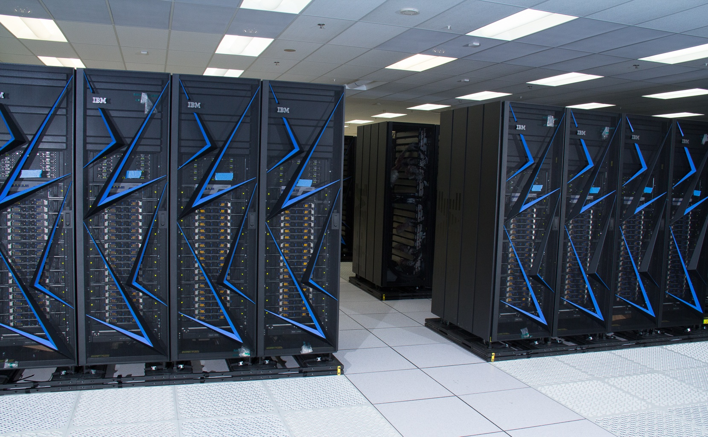
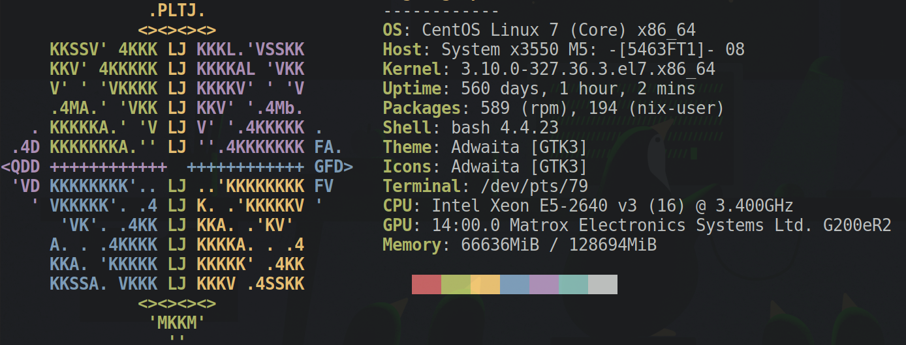
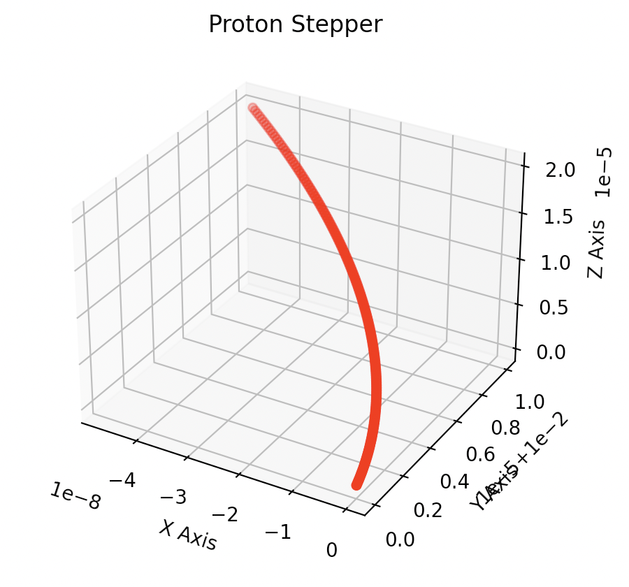
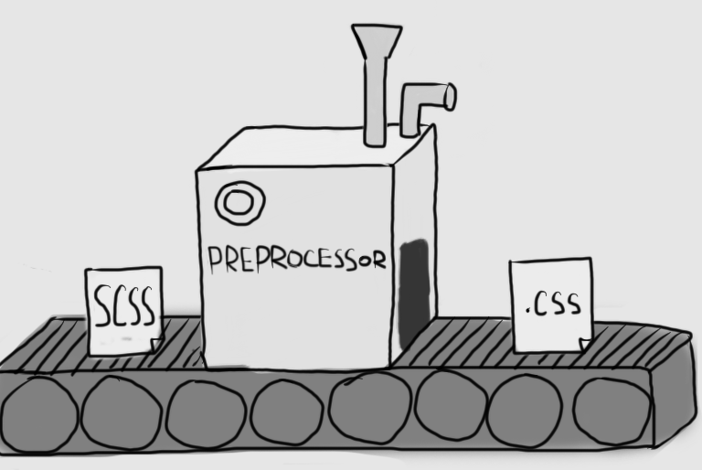

Enhancing slideware for computational physics education
Rohit Goswami
Created: 2023-03-22 Wed 13:30
1. Brief Introduction
1.1. Hello!
- Find me here: https://rgoswami.me
- Who?
- Rohit Goswami MInstP MRSC MBCS
- Doctoral Researcher, University of Iceland, Faculty of Physical Sciences & Science Insitute
- Software Engineer (II), Quansight Labs, TX, USA
- Rohit Goswami MInstP MRSC MBCS
1.2. Logistics
- All contents are hosted on GitHub
- Slides are in
docs/pres
- Slides are in
- Slides have shortned commit IDs
- These lead to specific points in the
git log
- These lead to specific points in the
- Questions are welcome after / during the lecture
- GitHub Discussions have been set up for this
2. Student Populations
- Few students
- Personal attention
- Workshops
- Many students
- Hard to provide feedback
- Courses
3. Major Obstacles
- Limited time
- Limited resources
- Reading code can be daunting
- Even small projects can run into the 1000s
- “A good building should not show its scaffolding when completed” –> Gauss
4. Theoretical Minimums
- Project setup
- Compilation
- Shell scripting?
- Environments?
- Documentation
- Best practices?
- Embedding?
- Devops?
4.1. Clusters
Woes
- No
docker- If lucky, will have
singularity
- If lucky, will have
- No userspace support
- No
proot
- No
- Probably runs CentOS or something
- Has a networked file system
- Uses a resource queue
- Slurm, PBS
- Might have support for
lmod


4.2. Proton Stepper
// Getters double physproc::TimeStepper::getX() { return p.position.x; }
// Accumulators std::vector<double> x, y, z; for (int i = 0; i < 1E3; i++) { ProtonStepper.Step(); if (i % 7 == 0) { x.push_back(ProtonStepper.getX()); ... } } py::scoped_interpreter guard{}; using namespace py::literals; py::dict locals = py::dict{ "x"_a = x, ... }; py::exec(R"( )", py::globals(), locals);

from mpl_toolkits.mplot3d import Axes3D import matplotlib.pyplot as plt fig = plt.figure() ax = fig.add_subplot(111, projection='3d') ax.scatter(x, y, z, c='r', marker='o') plt.show()
5. Local Project Layouts
5.1. Language Agnostic Beginnings
Readme.{md,org}- Motivation, rationale, license, installation instructions
LICENSE- Plain text, and preferably an open license
- license-generator is pretty handy for this
.gitignore- Lists files which do not need to be committed; typically generated files
- gibo can be used to generate these
$ git init # Inside project $ gibo macOS Windows Xcode Emacs \ Vim Python C++ \ CMake TeX > .gitignore $ touch readme.md $ license-generator MIT \ --author "Person" $ tree -L 2 . ├── LICENSE ├── docs │ └── pres └── readme.org 2 directories, 2 files
5.2. C++ Project Structure
src/- Should be split into libraries and executables
include/- For headers, internal and external
docs/- Documentation of all kinds, typically including markdown files
CMakeLists.txt- The project build system
ci/- Scripts for continuous integration
 1
// Along each -I and INCLUDE #include<iostream>
// Starts in the same directory // Reverse order upward // -I and INCLUDE #include "path-spec"
6. Iterative Improvements - I
6.1. Refactoring CMakefile - I
- Comments are imperative
- Segregation of build allows for easy cleanup
rm -rf build
# --- Variables if(NOT CMAKE_BUILD_TYPE) set(CMAKE_BUILD_TYPE Release endif() set(CMAKE_CXX_FLAGS "-Wall -Wextra") set(CMAKE_CXX_FLAGS_DEBUG "-g") set(CMAKE_CXX_FLAGS_RELEASE "-O3")
$ # Should fail!!! $ cmake .
cmake_minimum_required(VERSION 3.14 FATAL_ERROR) # ---- Project ---- project( PenningTrapSimulationII VERSION 1.0 LANGUAGES CXX ) # ---- Include guards ---- if(PROJECT_SOURCE_DIR STREQUAL PROJECT_BINARY_DIR) message( FATAL_ERROR "In-source builds not allowed. Please make a new directory (called a build directory) and run CMake from there." ) endif()
$ # Works $ cmake -H. -Bbuild $ cmake --build build $ cd build $ simulation.exe
6.2. Header Only Includes
- These are meant for small classes
- With inlined definitions
#ifndef IOP_VEC_H #define IOP_VEC_H ... #endif /* IOP_VEC_H */
- Prevents multiple inclusion
- Modularity means more unit-tests
- Better guarantees
# --- Library set(headers "${CMAKE_CURRENT_SOURCE_DIR}/include/math_types/iop_vec.hpp") set(sources "${CMAKE_CURRENT_SOURCE_DIR}/src/main.cpp") # Build add_executable(simulation.exe ${sources}) # Add to INCLUDE target_include_directories( simulation.exe PUBLIC $<BUILD_INTERFACE:${PROJECT_SOURCE_DIR}/include> )
- We prefer
<>to""for includes
#include <math_types/iop_vec.hpp>
7. Package Management
7.1. Current Scenario

- Nix is the answer!! (not here)
Pythonpoetry,pipenv,pyenvC++conan,vcpkg,cpm

7.2. CPM and CMake
mkdir -p cmake wget -O cmake/CPM.cmake "https://github.com/cpm-cmake/\ CPM.cmake/releases/latest/download/get_cpm.cmake" # Can get slow otherwise, rebuilds constantly export CPM_SOURCE_CACHE=$HOME/.cache/CPM
# --- Helpers include(cmake/CPM.cmake) CPMUsePackageLock(package-lock.cmake)
# We like locks cmake -H. -Bbuild cmake --build build --target cpm-update-package-lock
8. Testing
8.1. Testing Frameworks
C++has great testing frameworksCatch2,googletest,doctest, etc.
- Unit tests are the first layer
- Ensure each function outputs as expected
- Integration tests are for workflows
- Ensure each series of tasks connect correctly
# Catch2 CMakeLists.txt include(CTest) add_subdirectory(tests) enable_testing()
# --- Externals ./tests/CMakeLists.txt include(../cmake/CPM.cmake) CPMAddPackage("gh:catchorg/Catch2@2.13.4") add_executable(particle_tests main.cpp vector_particle-test.cpp phys_processes-test.cpp ) # Link everything target_link_libraries(particle_tests ioplib Catch2) target_compile_features(particle_tests PRIVATE cxx_std_17) # Project Libraries include_directories( ../src/include/data_types ${PROJECT_SOURCE_DIR}/src/include/) # ---- Run tests ---- add_test(NAME particleIOP-unit-tests COMMAND $<TARGET_FILE:particle_tests>)
8.2. Writing Tests
#define CATCH_CONFIG_MAIN #define CATCH_CONFIG_RUNNER #include <catch2/catch.hpp>
- The macros must not be repeated
- Many more test scenarios
- d-SEAMS has examples
- Official docs are great
- Try fixing gravity as homework!
- Open a PR (pull request) when done
#include <catch2/catch.hpp> #include <data_types/iop_particle.hpp> #include <data_types/iop_vec.hpp> #include <phys_procs.hpp> #include <iostream> TEST_CASE("Basic Vector class tests", "Vector3") { iopdat::Vector3 a{1, 2, 3}; REQUIRE(sizeof(a) == 24); REQUIRE(sizeof(a) / sizeof(1) == 6); REQUIRE(sizeof(a) / sizeof(1.0) == 3); iopdat::Vector3 b{4, 5, 6}; b += a; REQUIRE(b.x == 5); REQUIRE(b.y == 7); REQUIRE(b.z == 9); std::cout << b.x; }
9. Conclusions
9.1. Omitted Topics
- Continuous integration
- Robust tests
- Embeddings
- Mixing languages
- Documentation
- Possibly the most underrated skill in computational work
- Package Management
- Managing OS’s
- HPC and Parallelism
- Efficient data usage and algorithms
- Code Review Practices
- Scrum and teamwork
- Inter process communication
- Across networks and process, including serialization
9.2. Further Resources
- Microsoft Visual Studio
- Has a surprisingly good introduction and even some projects
- A Tutorial Introduction to Nix
- Package management at the system level in a reproducible manner
- SymEngine and the Season of Docs
- Describes the present SOTA for documentation practices in the context of a large multi-language project
- C++ workshop
- along these guidelines
9.3. Why?
- Better engagement
- Each slide corresponds to a commit
- Students can take their time
- Git history is readable
- Slides focus on changes
- Not too much cognitive overload
10. The End
10.1. Thanks!
Enhancing slideware for computational physics education Rohit Goswami Created: 2023-03-22 Wed 13:30